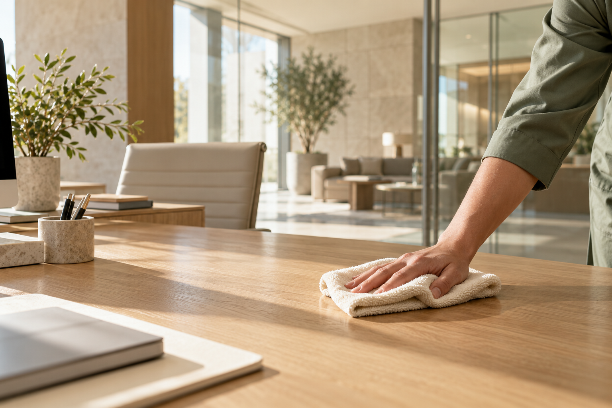

Nettoyage professionnel · Montpellier
Des lieux propres. Des journées plus légères.
Bureaux & espaces de travail, parties communes et après les travaux à Montpellier, Castelnau-le-Lez et Lattes.
Montpellier · Castelnau-le-Lez · Lattes

Les prestations
Des prestations pour vos espaces
Bureaux & espaces de travail
Un entretien pensé autour de vos espaces de travail. Précisez les surfaces, les zones concernées et la fréquence dont vous avez besoin.
Parties communes
Halls, escaliers et espaces partagés : définissons ensemble les lieux à entretenir et les modalités d’accès.
Après les travaux
Préparez la remise en usage de vos locaux en nous décrivant les travaux réalisés et le nettoyage à envisager.
Une question sur l’une de ces prestations ?
Prendre contactÀ propos
Notre approche
Maison Claire accompagne l’entretien des espaces professionnels à Montpellier. Bureaux, parties communes ou locaux après travaux : nous discutons avec vous des surfaces, des usages et du rythme d’intervention souhaité.
Cette présentation décrit une entreprise fictive. Le visuel est une illustration d’ambiance et ne représente pas une réalisation client.
- Vos espaces
- Bureaux, copropriétés et locaux professionnels
- Pour préparer notre échange
- Surfaces, accès et fréquence souhaitée
À proximité
Zone d’intervention
- Montpellier
- Castelnau-le-Lez
- Lattes
Et maintenant ?
Parlons de vos locaux
Une question ou un projet ? Contactez Maison Claire directement par téléphone ou par e-mail.